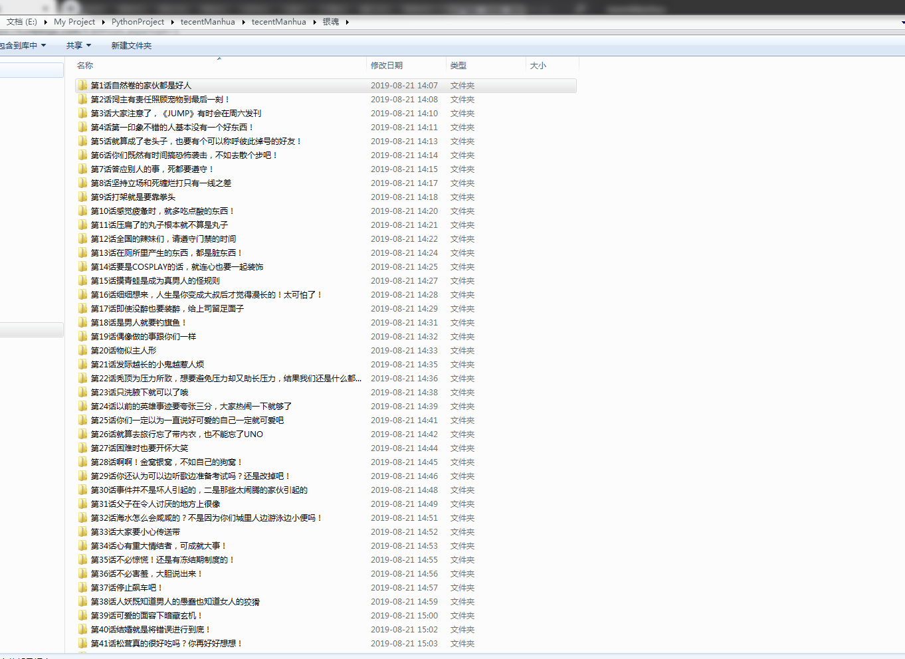

先上个爬取的结果图
最后的结果为每部漫画按章节保存

运行环境
IDE VS2019
Python3.7
Chrome、ChromeDriver
Chrome和ChromeDriver的版本需要相互对应
先上代码，代码非常简短，包含空行也才50行，多亏了python强大的库
import os
import time
import requests
from selenium import webdriver
from lxml import etree
def getChapterUrl(url):
headers = {
"User-Agent": "Mozilla/5.0 (Macintosh; Intel Mac OS X 10_13_4) AppleWebKit/537.36 (KHTML, like Gecko) Chrome/66.0.3359.139 Safari/537.36"
}
part_url = "http://ac.qq.com"
res = requests.get(url, headers=headers)
html=res.content.decode()
el = etree.HTML(html)
li_list = el.xpath('//*[@id="chapter"]/div[2]/ol[1]/li')
for li in li_list:
for p in li.xpath("./p"):
for span in p.xpath("./span[@class='works-chapter-item']"):
item = {}
list_title = span.xpath("./a/@title")[0].replace(' ', '').split('：')
if list_title[1].startswith(('第', '序')):
getChapterFile(part_url + span.xpath("./a/@href")[0], list_title[0],list_title[1])
def getChapterFile(url,path1,path2):
#path = os.path.join(path)
#漫画名称目录
path=os.path.join(path1)
if not os.path.exists(path):
os.mkdir(path)
#章节目录
path=path+'\\'+path2
if not os.path.exists(path):
os.mkdir(path)
chrome=webdriver.Chrome()
#"http://ac.qq.com/ComicView/index/id/505435/cid/2"
chrome.get(url)
time.sleep(4)
imgs = chrome.find_elements_by_xpath("//div[@id='mainView']/ul[@id='comicContain']//img")
for i in range(0, len(imgs)):
js="document.getElementById('mainView').scrollTop="+str((i) * 1280)
chrome.execute_script(js)
time.sleep(3)
print(imgs[i].get_attribute("src"))
with open(path+'\\'+str(i)+'.png', 'wb') as f:
f.write(requests.get(imgs[i].get_attribute("src")).content)
chrome.close()
print('下载完成')
if __name__ == '__main__':
getChapterUrl('http://ac.qq.com/Comic/ComicInfo/id/505435')简单解释
输入一个漫画的url即可爬取该漫画所有的章节，由于是模拟用户爬取的，所以速度方面有点慢，我试了下爬取银魂前70章，用了1个半小时，代码中的sleep可以适当简短点已加快爬取的速度
付费的漫画是没有办法爬取的
谈一下过程中遇到的坑
腾讯的漫画网站打开章节时没有把所有图片的url都加载出来，所以我在这里用的方式是使用selenium来模拟用户操作，每次打开页面以后使用js操作滚动条下拉
最后再贴下代码库，其实贴出的代码已经是所有的代码了
https://dev.azure.com/shenjuncaci/PythonTecentManhua